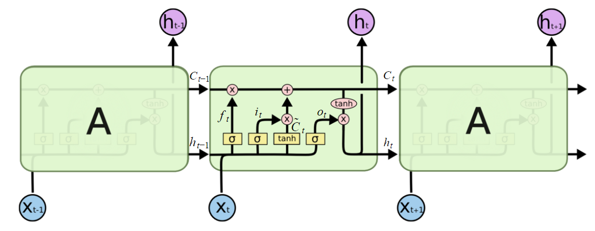

Исследование: глубокое машинное обучение

- Модель: LSTM
- Векторное представление слов
- Из-за большого количества параметров моделей появилась необходимость автоматизации исследований
Рисунок взят из статьи: "LSTM – сети долгой краткосрочной памяти"
https://habrahabr.ru/company/wunderfund/blog/331310/ (дата обращения: 05.04.2018)